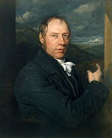

Richard Trevithick (13 April 1771 – 22 April 1833) was a British inventor and
mining engineer from Cornwall, England.The son of a mining captain, and born in
the mining heartland of Cornwall, Trevithick was immersed in mining and
engineering from an early age.
He performed poorly in school, but went on to be
an early pioneer of steam-powered road and rail transport. His most significant
contribution was the development of the first high-pressure steam engine. He
also built the first full-scale working railway steam locomotive.
On 21 February
1804 the world's first locomotive-hauled railway journey took place as
Trevithick's unnamed steam locomotive hauled a train along the tramway of the
Penydarren Ironworks, in Merthyr Tydfil, Wales.
Turning his interests abroad, Trevithick also worked as a mining consultant in
Peru and later explored parts of Costa Rica. Throughout his professional career,
he went through many ups and downs, and at one point faced financial ruin, also
suffering from the strong rivalry of many mining and steam engineers of the day.
During the prime of his career, he was a well-respected and known figure in
mining and engineering, but near the end of his life he fell out of the public
eye.
Richard Trevithick was born at Tregajorran (in the parish of Illogan), between
Camborne and Redruth, in the heart of one of the rich mineral mining areas of
Cornwall.
He was the youngest-but-one child and the only boy in a family of six
children. He was very tall for the era at 6 ft 2in, as well as athletic and
concentrated more on sport than schoolwork. Sent to the village school at
Camborne, he did not take much advantage of the education provided – one of his
school masters described him as "a disobedient, slow, obstinate, spoiled boy,
frequently absent and very inattentive".
An exception was arithmetic, for which
he had an aptitude, but arrived at the correct answers by unconventional means.
Trevithick was the son of mine "captain" Richard Trevithick (1735–1797) and of
miner's daughter Ann Teague (died 1810). As a child he would watch steam engines
pump water from the deep tin and copper mines in Cornwall.
For a time he was a
neighbour to William Murdoch, the steam carriage pioneer, and would have been
influenced by his experiments with steam-powered road locomotion.
Trevithick first went to work at the age of 19 at the East Stray Park Mine. He
was enthusiastic and quickly gained the status as a consultant, unusual for such
a young person. He was popular with the miners because of the respect they had
for his father.
ane's father, John Harvey, formerly a blacksmith from Carnhell Green, formed the
local foundry, Harveys of Hayle. His company became famous worldwide for
building huge stationary "beam" engines for pumping water, usually from mines,
based on Newcomen's and Watt's engines.
Until this time, such steam engines were of the condensing or atmospheric type,
originally invented by Thomas Newcomen in 1712, and which also became known as
low-pressure engines.
James Watt, on behalf of his partnership with Matthew
Boulton, held a number of patents for improving the efficiency of Newcomen's
engine, including the "separate condenser patent" – which proved the most
contentious.
Trevithick became engineer at the Ding Dong Mine in 1797, and there (in
conjunction with Edward Bull) he pioneered the use of high-pressure steam. He
worked on building and modifying steam engines to avoid the royalties due to
Watt on the separate condenser patent.
At Ding Dong Boulton and Watt served an
injunction on him and posted it "on the minestuffs" and "most likely on the
door" of the Count (Account) House which, although now a ruin, is the only
surviving building from Trevithick's time at Ding Dong.
He also experimented with the plunger-pole pump, a type of pump – with a beam
engine – used widely in Cornwall's tin mines, in which he reversed the plunger
to change it into a water-power engine.